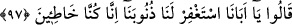
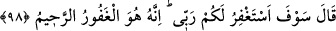
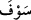
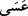

Rivâyet edilir ki Yâkub (a.s.) müjdeciye:
–“Yûsuf’un durumu nasıl?” diye sordu.
Müjdeci:
–“O şimdi Mısır’ın meliki” dedi.
Bu sözü duyan Yâkub (a.s.):
–“Dünyâ mülkünü ben ne yapayım. Buraya gelirken sen onu hangi din üzere bıraktın.”
dedi.
Müjdeci:
–‘İslâm dini üzere bıraktım’ cevabını verince:
–‘İşte nimet şimdi tamamlanmış oldu’ dedi.
97. (Oğulları): “Ey babamız! bizim günahlarımızın bağışlanmasını dile.
Gerçekten biz günah işledik.” dediler.
Oğulları: “Ey babamız! Bizim günahlarımızın bağışlanmasını dile. Gerçekten biz
günah işledik dediler.” Yani gerek sana gerek Yûsuf’a gerekse Bünyamin’e
yaptıklarımız yüzünden günaha girerek kasden hata ve suç işledik. Bize karşı duyduğun
şefkat, günahlarımızın bağışlanmasını dilemeni gerektiriyor. Eğer bunu yapmazsan biz
gerçekten helak oluruz.
98. (Yâkub:) “Sizin için Rabbimden af dileyeceğim. Şüphesiz O, bağışlayandır,
esirgeyendir.” dedi.
“Sizin için Rabbimden af dileyeceğim. Şüphesiz O, bağışlayandır, esirgeyendir
dedi.”
Büyüklerin ve uluların yaptığı vaadlerde kullanılan “
(ileride)”, “
(belki)”, “
(umulur ki)” ifadeleri, işin doğruluğunu, muhakkak surette gerçekleşeceğini ve onlar
için kesinlik ve katiyyet ifade ettiğini gösterir. Onlar, bu tür ifadelerle vakarlarını ve
acele etmediklerini gösterirler. İşte Yâkub (a.s.)’ın vaadi de bu kurala uygun olarak
cerayan etmiştir. Sanki Yâkub (a.s.) şöyle demiş olmaktadır: ‘Sizin için hiç şüpheniz
olmasın ki biraz gecikse bile, mutlaka af dileyeceğim!’ Nitekim Bahru’l-ulûm’da böyle
geçmektedir.
Şa‘bî’den nakledilmiştir: “Sizin için Rabbimden af dileyeceğim.” Yâkub (a.s.) dedi
ki: “Yûsuf’a soracağım, şâyet o sizi affederse, ben de Rabbimden sizi bağışlamasını